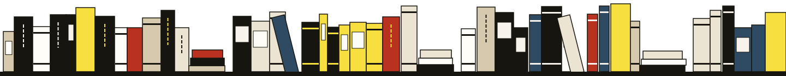
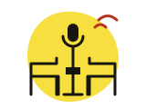
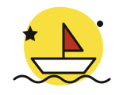
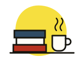
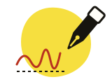

Agenda · automne 2026
Des soirées pour acheter parler des livres.
Rencontres, lectures, dédicaces, heure du conte et club de lecture : il se passe quelque chose à la librairie presque chaque semaine. C’est gratuit, mais les places sont comptées, alors inscrivez-vous.

-
23oct. 2026
jeudi · 19 hRencontre
Margaux Delorme, « L’Été des volets clos »
Animée par Odile
Une heure de discussion autour d’un roman sur les silences d’une famille, puis une séance de signatures. Cidre et jus de pomme offerts.
Entrée libre · 45 places

M’inscrire -
31oct. 2026
samedi · 11 hJeunesse
L’heure du conte : histoires qui font (un peu) peur
Avec Jeanne
Pour les 4–7 ans, déguisement bienvenu. Trois albums lus à voix haute dans le coin jeunesse, puis un goûter. Les parents peuvent rester… ou filer au rayon polar.
Gratuit · 15 enfants

M’inscrire -
4nov. 2026
mardi · 19 h 30Club de lecture
Les Raturés : « Traité du presque », d’Anouk Ferrandi
Avec Paul
Notre club du premier mardi du mois. On a lu le livre (ou presque, c’est de circonstance) et on en parle franchement, autour d’un thé.
Gratuit · 12 places

M’inscrire -
13nov. 2026
jeudi · 19 hLecture
Ilan Keravec lit « Le Cadastre des oiseaux »
Au violoncelle : Clémence Arnaud
Une lecture à deux voix, l’auteur et un violoncelle, pour un récit qui se prête au silence. Quarante minutes, sans micro, lumières baissées.
Entrée libre · 40 places
-
22nov. 2026
samedi · 15 h–18 hDédicace BD
Camille Vasseur dessine « Les Ronces, tome 2 »
Avec Samir
Dédicaces dessinées, une par personne, dans l’ordre d’arrivée. Les tickets de passage sont distribués dès l’ouverture, à 10 h.
Gratuit · ticket de passage

M’inscrire -
10déc. 2026
mercredi · 19 hSoirée
Livres à offrir : nos trente idées pour les fêtes
Avec toute l’équipe
Les quatre libraires présentent, en une heure et sans notes, les livres qu’ils vont offrir cette année. Paquets cadeaux faits sur place, vin chaud.
Entrée libre
Le club de lecture
Les Raturés, le premier mardi du mois
Douze lecteurs, un livre, une heure et demie. On vient même si on n’a pas aimé, surtout si on n’a pas aimé. Le livre du mois est à −5 % pour les membres du club, et le thé est offert.
Pas d’inscription à l’année : on s’inscrit au mois, selon le livre et l’envie.
Rejoindre le prochain clubLes prochaines lectures
- 4 nov.Traité du presqueAnouk Ferrandi · essai
- 2 déc.La Maison aux sept horlogesPia Lindqvist, traduit du suédois · roman
- 6 janv.Ce que la marée laisseHugo Taillefer · nouvelles
et en février, c’est vous qui choisissez !
Vous êtes auteur, autrice, éditeur ?
Nous organisons une quarantaine de rencontres par an. Écrivez-nous trois mois à l’avance à bonjour@librairie-rature.example, avec le livre et les dates possibles.